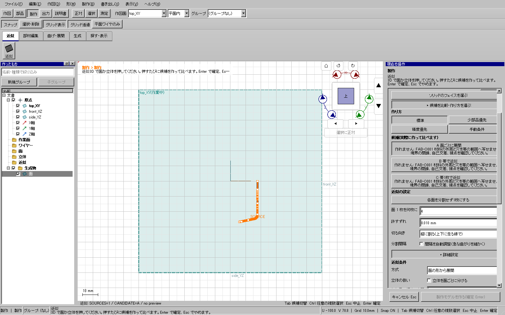
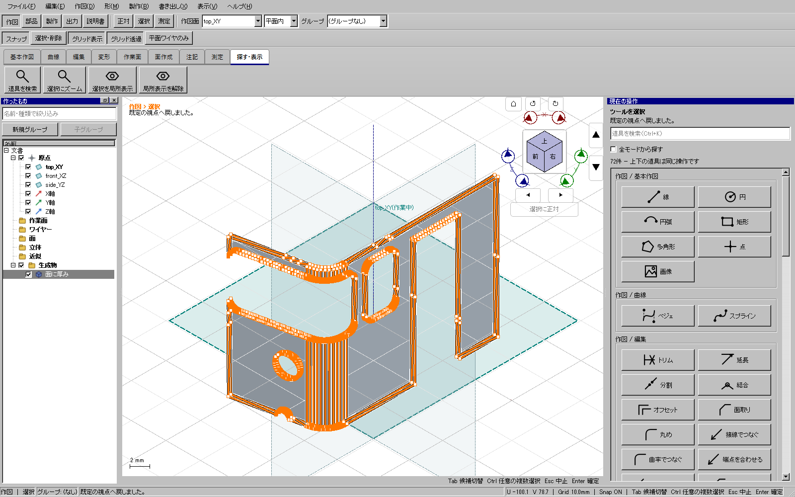

2026-11-09。WP-09の既存材料領域処理だけを限定修正。全体・配布版ゲートが成功し、5be3b4998の更新4を公開した。
公開更新3で、前面の一枚近似面から通常の面オフセットで中立面を保存できた。しかし同じ保存面を近似すると、 FAB-O001「材料の外周と穴を帯の範囲へ写せません」で確定できなかった。面ごとの方法・自動方向・許容誤差0.01/0.1 mmでも再現した。 元・近似外面・中立面は読み取り専用native検査で各1フェイスとして取得できた。
領域を切る端に非常に近い点が、既存UV epsilonの内側と外側へ少しずつ変わっていた。一部の辺だけが境界辺として省略され、 残った点と追加した境界辺がつながらなかった。実入力の切れ目はUVで約1.32e-9。 さらに固定量1e-8だけ内側を調べる判定が、その近くの本来の辺を越えて不要な境界辺も加えていた。
既存のepsilonを増やさず、境界上と判断する点の座標を切断と接続で統一する。 内外判定は帯の内側で最も近い表現可能な座標へ変更し、実在する細い隙間を飛び越えない。 元入力と整理後の双方で自己交差・接点・穴の包含を検査し、不正な輪郭を修復して通す処理にはしない。 公開API、保存形式、元面、曲線、穴、モデルの許容誤差と出力精度は変えない。
小さな再現例は修正前に失敗。境界点を揃えるだけの最初の候補も失敗し、内外判定の修正を加えて成功した。 上下両端・U/V方向、2穴の保持と材料面積、epsilonより広い細い接続部の保持、接触・曖昧な隙間の拒否を確認。 既存の曲面・分割・穴・長さ不変と不正領域の拒否を含む13件が成功した。
同じnative入力を製品の領域処理へ渡すと、元面・近似外面・中立面がいずれもU/V両方向で成功。 実UI270dでは保存面から型紙、中央0.5 mmの部材、保存、Ctrl+Z/Y、独立KCD2、STEPが成功。 別の実UI281で保存部材を読み直し、画面のホーム視点ボタンと選択ズームで確認した。
| 照合 | 結果 |
|---|---|
| 厚み付き部材 | 有効な正体積の1ソリッド。221.022647564 mm³（元221.042810961 mm³） |
| 型紙 | 35.637 × 20.0078 mm、閉輪郭3個。SVG/DXF/PDFの有限標本比較が成功 |
| 形式間の差 | SVG/DXF 約0.0000643 mm、SVG/PDF 約0.000244 mm以下 |


この部材は一枚・1ソリッドだがnativeフェイスが4,176個、型紙は2,400線分あり、選択表示も細かい。 これは最終の製作用部材として未採用。境界の簡素化と処理負荷、元形状との差、周囲部品との接合を引き続き調べる。 全車体の製作近似・全型紙・実物の切断/曲げ/接着/組立、全形状への対応を証明するものではない。
証拠: out/series115-plaboard-20261105/277-material-clip-before.txt、
277-material-clip-after.txt、277-material-clip-after3.txt、
275-approx-neutral-material-uv.json、279-approx-neutral-production-clip-after.json、
actual-candidate14-front-neutral-stock-20261109、actual-candidate14-front-stock-review-20261109、
280-front-stock-cut-proof.json。全体証拠: out/verification/material-boundary-release-20261109/result.json。事前9件、CTest197件（skip0）、開発/配布UI各720件、通常Windows起動と従来自己試験が成功。GitHubのタグ・対象コミット・最新タグ・ZIPサイズとSHA256も照合済み。
全体・配布版検証済みの更新4を入手する。全車体製作と全型紙、細分化の軽量化は継続する。